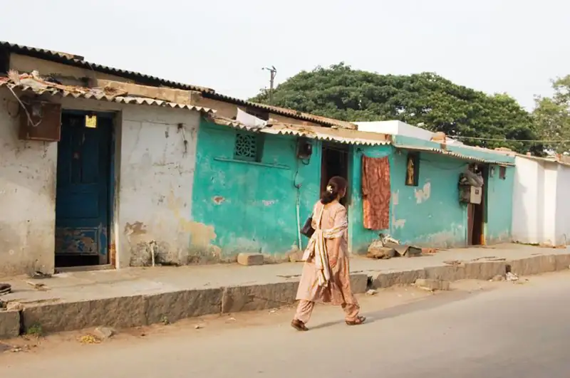
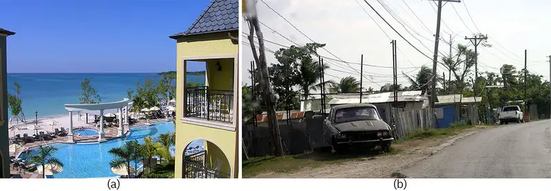

Chapter 9: Social Stratification in the United States¶
Introduction¶
Jarrett grew up on a farm in rural Ohio, left home to serve in the Army, and returned a few years later to take over the family farm. He moved into his family house, and eighteen months later married Eric, with whom he had maintained a long-distance relationship for several years. Eric had two children from a previous marriage. They quickly realized the income from the farm was no longer sufficient to meet their needs. Jarrett, with little experience beyond the farm, took on a job at a grocery store to supplement his income. This part-time job shifted the direction of their family’s life.
One of the managers at the store liked Jarrett, his attitude, and his work ethic. He began to groom Jarrett for advancement at the store, and encouraged him to take a few classes at a local college. Despite knowing he'd receive financial support from the military, this was the first time Jarrett had seriously thought about college. Could he be successful, Jarrett wondered? Could he actually become the first in his family to earn a degree? Fortunately, Eric also believed in him. Jarrett kept his college enrollment a secret from his mother, his brothers, and his friends. He did not want others to know about it, in case he failed.
Jarrett was nervous on his first day of class. He was older than the other students, and he had never considered himself college material. When he earned only a C- on his first test, he thought his fears were being realized, and that it was perhaps not a fit for him. But his instructor strongly recommended that Jarrett pay a visit to the academic success center. After a few sessions, he utilized a better study schedule and got a B- on the next exam. He was successful in that class, and enrolled in two more the next semester.
Unfortunately, life took a difficult turn when Jarrett's and Eric's daughter became ill; he couldn't focus on his studies and he dropped all of his classes. With his momentum slowed, Jarrett wasn't sure he was ready to resume after his daughter recovered. His daughter, though, set him straight. One day after telling her to start her homework, she was reluctant and said, "You're not doing your homework anymore; I shouldn’t have to do mine." A bit annoyed, Jarrett and Eric explained the difference between being an adult with work and family obligations and being a child in middle school. But Jarrett realized he was most upset at himself for using her illness as an excuse. He thought he wasn't living up to the example he wanted to set for her. The next day, he called his academic advisor and re-enrolled.
Just under two years later, Jarrett was walking across the stage to receive a Bachelor’s degree with a special certificate for peer support. The ceremony seemed surreal to Jarrett. He'd earned medals and other recognition in the military, but he always felt those accomplishments were shared among his team. While he'd had a lot of help with college, he felt that graduating was a milestone that was more closely tied to himself.
Stories like this permeate American society and may sound familiar, yet this quest to achieve the American Dream is often hard for many Americans to achieve, even with hard work. After all, nearly one in three first-year college students is a first-generation college student and many are not as successful as Jarrett. According to the Center for Student Opportunity, a national nonprofit, 89% of first-generation students will not earn an undergraduate degree within six years of starting their studies. In fact, these students “drop out of college at four times the rate of peers whose parents have postsecondary degrees” (Center for Student Opportunity quoted in Huot 2014).
Why do students with parents who have completed college tend to graduate more often than those students whose parents do not hold degrees? That question and many others will be answered as we explore social stratification.
9.1 What Is Social Stratification?¶
Learning Objectives
By the end of this section, you should be able to:
- Differentiate between open and closed stratification systems
- Distinguish between caste and class systems
- Explain why meritocracy is considered an ideal system of stratification
Sociologists use the term social stratification to describe the system of social standing. Social stratification refers to a society’s categorization of its people into rankings based on factors like wealth, income, education, family background, and power.
Geologists also use the word “stratification” to describe the distinct vertical layers found in rock. Typically, society’s layers, made of people, represent the uneven distribution of society’s resources. Society views the people with more resources as the top layer of the social structure of stratification. Other groups of people, with fewer and fewer resources, represent the lower layers. An individual’s place within this stratification is called socioeconomic status (SES).
Most people and institutions in the United States indicate that they value equality, a belief that everyone has an equal chance at success. In other words, hard work and talent—not inherited wealth, prejudicial treatment, institutional racism, or societal values—determine social mobility. This emphasis on choice, motivation, and self-effort perpetuates the American belief that people control their own social standing.
However, sociologists recognize social stratification as a society-wide system that makes inequalities apparent. While inequalities exist between individuals, sociologists are interested in larger social patterns. Sociologists look to see if individuals with similar backgrounds, group memberships, identities, and location in the country share the same social stratification. No individual, rich or poor, can be blamed for social inequalities, but instead all participate in a system where some rise and others fall. Most Americans believe the rising and falling is based on individual choices. But sociologists see how the structure of society affects a person's social standing and therefore is created and supported by society.
Factors that define stratification vary in different societies. In most societies, stratification is an economic system, based on wealth, the net value of money and assets a person has, and income, a person’s wages or investment dividends. While people are regularly categorized based on how rich or poor they are, other important factors influence social standing. For example, in some cultures, prestige is valued, and people who have them are revered more than those who don’t. In some cultures, the elderly are esteemed, while in others, the elderly are disparaged or overlooked. Societies’ cultural beliefs often reinforce stratification.
One key determinant of social standing is our parents. Parents tend to pass their social position on to their children. People inherit not only social standing but also the cultural norms, values, and beliefs that accompany a certain lifestyle. They share these with a network of friends and family members that provide resources and support. This is one of the reasons first-generation college students do not fare as well as other students. They lack access to the resources and support commonly provided to those whose parents have gone to college.
Other determinants are found in a society’s occupational structure. Teachers, for example, often have high levels of education but receive relatively low pay. Many believe that teaching is a noble profession, so teachers should do their jobs for love of their profession and the good of their students—not for money. Yet, the same attitude is not applied to professional athletes, executives, or those working in corporate world. Cultural attitudes and beliefs like these support and perpetuate social and economic inequalities.
Systems of Stratification¶
Sociologists distinguish between two types of systems of stratification. Closed systems accommodate little change in social position. They do not allow people to shift levels and do not permit social relationships between levels. Closed systems include estate, slavery, and caste systems. Open systems are based on achievement and allow for movement and interaction between layers and classes. How different systems operate reflect, emphasize, and foster specific cultural values, shaping individual beliefs. In this section, we’ll review class and caste stratification systems, plus discuss the ideal system of meritocracy.
The Caste System¶

Caste systems are closed stratification systems where people can do little or nothing to change the social standing of their birth. The caste system determines all aspects of an individual’s life: occupations, marriage partners, and housing. Individual talents, interests, or potential do not provide opportunities to improve a person's social position.
In the Hindu caste tradition, people expect to work in an occupation and to enter into a marriage based on their caste. Accepting this social standing is considered a moral duty and people are socialized to accept their social standing. Cultural values reinforced the system. Caste systems promote beliefs in fate, destiny, and the will of a higher power, rather than promoting individual freedom as a value. This belief system is an ideology. Every culture has an ideology that supports its system of stratification.
The caste system in India has been officially dismantled, but is still deeply embedded in Indian society, particularly in rural areas. In India’s larger cities, people now have more opportunities to choose their own career paths and marriage partners. As a global center of employment, corporations have introduced merit-based hiring and employment to the nation shifting the cultural expectations of the caste system.
The Class System¶
A class system is based on both social factors and individual achievement. A class consists of a set of people who share similar status based on factors like wealth, income, education, family background, and occupation. Unlike caste systems, class systems are open. People may move to a different level (vertical movement) of education or employment status than their parents. Though family and other societal models help guide a person toward a career, personal choice and opportunity play a role.
They can also socialize with and marry members of other classes. People have the option to form an exogamous marriage, a union of spouses from different social categories. Exogamous marriages often focus on values such as love and compatibility. Though social conformities still exist that encourage people to choose partners within their own class, called an endogamous marriage, people are not as pressured to choose marriage partners based solely on their social location.
Meritocracy¶
Meritocracy is a hypothetical system in which social stratification is determined by personal effort and merit. The concept of meritocracy is an ideal because no society has ever existed where social standing was based entirely on merit. Rather, multiple factors influence social standing, including processes like socialization and the realities of inequality within economic systems. While a meritocracy has never existed, sociologists see aspects of meritocracies in modern societies when they study the role of academic and job performance and the systems in place for evaluating and rewarding achievement in these areas.
The differences between an open and closed system are explored further in the example below.
Status Consistency¶
Sociologists use the term status consistency to describe the consistency, or lack thereof, of an individual’s rank across the factors that determine social stratification within a lifetime. Caste systems correlate with high status consistency, due to the inability to move out of a class, whereas the more flexible class system demonstrates lower status consistency.
To illustrate, let’s consider Serena. Serena earned her high school diploma but did not go to college. Completing high school but not college is a trait more common to the lower-middle class. After high school, she began landscaping, which, as manual labor, tracks with lower-middle class or even lower class. However, over time, Serena started her own company. She hired employees. She won larger contracts. Serena became a business owner and earned more money. Those traits represent the upper-middle class. Inconsistencies between Serena’s educational level, her occupation, and income show Serena’s flexibility in her social status, giving her low status consistency. In a class system, hard work, new opportunities, coupled with a lower education status still allow a person movement into middle or upper class, whereas in a caste system, that would not be possible. In a class system, low status consistency correlates with having more choices and opportunities.
Social Policy and Debate: LEAVING ROYALTY BEHIND
Meghan Markle, who married a member of the British royal family, for years endured unceasing negative media attention, invasion of privacy, and racially abusive comments. She and her husband–Prince Harry, grandson to Queen Elizabeth–undertook a series of legal actions to push back against overly aggressive media outlets. But because of the continued harassment and disagreements with others in the royal family, Meghan and Harry decided to step down from their royal obligations and begin a disassociation from the British monarchy. In doing so, they gave up honorary positions, titles, and financial support. For Meghan, who had been born in the U.S. and had earned her wealth through a successful career, these changes may not be so jarring. Prince Harry, however, had been "His Royal Highness" since he was born; by nature of his ancestry he was entitled to vast sums of money, property, and cultural-political positions such as Honorary Air Commandant, Commodore-in-Chief, and President of the Queen's Commonwealth Trust. Harry would also lose the military rank he had earned through almost ten years of military service, including two combat deployments to Afghanistan. Would Megxit work for him? What gave him those honors in the first place?
Britain’s monarchy arose during the Middle Ages. Its social hierarchy placed royalty at the top and commoners on the bottom. This was generally a closed system, with people born into positions of nobility. Wealth was passed from generation to generation through primogeniture, a law stating that all property would be inherited by the firstborn son. If the family had no son, the land went to the next closest male relation. Women could not inherit property, and their social standing was primarily determined through marriage.
The arrival of the Industrial Revolution changed Britain’s social structure. Commoners moved to cities, got jobs, and made better livings. Gradually, people found new opportunities to increase their wealth and power. Today, the government is a constitutional monarchy with the prime minister and other ministers elected to their positions, and with the royal family’s role being largely ceremonial. The long-ago differences between nobility and commoners have blurred, and the modern class system in Britain is similar to that of the United States (McKee 1996).
Today, the royal family still commands wealth, power, and a great deal of attention. After the death of Queen Elizabeth II in September 2022, Prince Charles ascended the throne. When he retires or passes away, the position will go to Prince William, Prince Harry's older brother.
Prince Harry and Meghan Markle, meanwhile, moved to Los Angeles and signed a voiceover deal with Disney while also joining Netflix in a series production. They founded an organization focusing on non-profit activities and media ventures. Living in LA and working to some extent in entertainment, they will likely be considered a different type of royalty.
9.2 Social Stratification and Mobility in the United States¶
Learning Objectives
By the end of this section, you should be able to:
- Describe the U.S. class structure
- Describe several types of social mobility
- Recognize characteristics that define and identify class
How does social stratification affect your ability to move up or down the social classes? What is a standard of living? What factors matter in rising up or becoming more successful in the eyes of those around you? Does being in a social class dictate your style, behavior, or opportunities?
Social Classes in the United States¶
For sociologists, categorizing social class is a fluid science. Sociologists generally identify three levels of class in the United States: upper, middle, and lower class. Within each class, there are many subcategories. Wealth is the most significant way of distinguishing classes, because wealth can be transferred to one’s children and perpetuate the class structure. One economist, J.D. Foster, defines the 20 percent of U.S. citizens’ highest earners as “upper income,” and the lower 20 percent as “lower income.” The remaining 60 percent of the population make up the middle class (Mason 2010). With that distinction, economists can describe the range in annual household incomes for the middle-class, but they cannot show how the range of all incomes vary and how they change over time. For this reason, the Pew Center defines classes based on the median household income. The lower class includes those whose income is two-thirds of the national median, the middle class includes those whose income falls between two-thirds and twice the median, and the upper class includes those whose income is above twice the national median (Kochhar 2015). Though median income levels vary from state to state, at the national level you would be considered in the middle-class if you earned between $48,500 to $145,500 in 2018 U.S. dollars (Bennett 2000).
One sociological perspective distinguishes the classes, in part, according to their relative power and control over their lives. Members of the upper class not only have power and control over their own lives, but their social status gives them power and control over others’ lives. The middle class doesn’t generally control other strata of society, but its members do exert control over their own lives. In contrast, the lower class has little control over their work or lives. Below, we will explore the major divisions of U.S. social class and their key subcategories.
Upper Class¶
The upper class is considered the top, and only the powerful elite get to see the view from there. In the United States, people with extreme wealth make up one percent of the population, and they own roughly one-third of the country’s wealth (Beeghley 2008).
Money provides not just access to material goods, but also access to a lot of power. As corporate leaders, members of the upper class make decisions that affect the job status of millions of people. As media owners, they influence the collective identity of the nation. They run the major network television stations, radio broadcasts, newspapers, magazines, publishing houses, and sports franchises. As board members of the most influential colleges and universities, they influence cultural attitudes and values. As philanthropists, they establish foundations to support social causes they believe in. As campaign contributors and legislation drivers, they fund political campaigns to sway policymakers, sometimes to protect their own economic interests and at other times to support or promote a cause. (The methods, effectiveness, and impact of these political efforts are discussed in the Politics and Government chapter.)
U.S. society has historically distinguished between “old money” (inherited wealth passed from one generation to the next) and “new money” (wealth you have earned and built yourself). While both types may have equal net worth, they have traditionally held different social standings. People of old money, firmly situated in the upper class for generations, have held high prestige. Their families have socialized them to know the customs, norms, and expectations that come with wealth. Often, the very wealthy don’t work for wages. Some study business or become lawyers in order to manage the family fortune. Others, such as Paris Hilton and Kim Kardashian, capitalize on being a rich socialite and transform that into celebrity status, flaunting a wealthy lifestyle.
However, new-money members of the upper class are not oriented to the customs and mores of the elite. They haven’t gone to the most exclusive schools. They have not established old-money social ties. People with new money might flaunt their wealth, buying sports cars and mansions, but they might still exhibit behaviors attributed to the middle and lower classes.
The Middle Class¶
Many people consider themselves middle class, but there are differing ideas about what that means. People with annual incomes of $150,000 call themselves middle class, as do people who annually earn $30,000. That helps explain why, in the United States, the middle class is broken into upper and lower subcategories.
Lower-middle class members tend to complete a two-year associate’s degrees from community or technical colleges or a four-year bachelor’s degree. Upper-middle class people tend to continue on to postgraduate degrees. They’ve studied subjects such as business, management, law, or medicine.
Middle-class people work hard and live fairly comfortable lives. Upper-middle-class people tend to pursue careers, own their homes, and travel on vacation. Their children receive high-quality education and healthcare (Gilbert 2010). Parents can support more specialized needs and interests of their children, such as more extensive tutoring, arts lessons, and athletic efforts, which can lead to more social mobility for the next generation. Families within the middle class may have access to some wealth, but also must work for an income to maintain this lifestyle.
In the lower middle class, people hold jobs supervised by members of the upper middle class. They fill technical, lower- level management or administrative support positions. Compared to lower-class work, lower-middle-class jobs carry more prestige and come with slightly higher paychecks. With these incomes, people can afford a decent, mainstream lifestyle, but they struggle to maintain it. They generally don’t have enough income to build significant savings. In addition, their grip on class status is more precarious than those in the upper tiers of the class system. When companies need to save money, lower-middle class people are often the ones to lose their jobs.
The Lower Class¶
The lower class is also referred to as the working class. Just like the middle and upper classes, the lower class can be divided into subsets: the working class, the working poor, and the underclass. Compared to the lower middle class, people from the lower economic class have less formal education and earn smaller incomes. They work jobs that require less training or experience than middle-class occupations and often do routine tasks under close supervision.
Working-class people, the highest subcategory of the lower class, often land steady jobs. The work is hands-on and often physically demanding, such as landscaping, cooking, cleaning, or building.
Beneath the working class is the working poor. They have unskilled, low-paying employment. However, their jobs rarely offer benefits such as healthcare or retirement planning, and their positions are often seasonal or temporary. They work as migrant farm workers, housecleaners, and day laborers. Education is limited. Some lack a high school diploma.
How can people work full-time and still be poor? Even working full-time, millions of the working poor earn incomes too meager to support a family. The government requires employers pay a minimum wage that varies from state to state, and often leave individuals and families below the poverty line. In addition to low wages, the value of the wage has not kept pace with inflation. “The real value of the federal minimum wage has dropped 17% since 2009 and 31% since 1968 (Cooper, Gould, & Zipperer, 2019). Furthermore, the living wage, the amount necessary to meet minimum standards, differs across the country because the cost of living differs. Therefore, the amount of income necessary to survive in an area such as New York City differs dramatically from small town in Oklahoma (Glasmeier, 2020).
The underclass is the United States’ lowest tier. The term itself and its classification of people have been questioned, and some prominent sociologists (including a former president of the American Sociological Association), believe its use is either overgeneralizing or incorrect (Gans 1991). But many economists, sociologists government agencies, and advocacy groups recognize the growth of the underclass. Members of the underclass live mainly in inner cities. Many are unemployed or underemployed. Those who do hold jobs typically perform menial tasks for little pay. Some of the underclass are homeless. Many rely on welfare systems to provide food, medical care, and housing assistance, which often does not cover all their basic needs. The underclass have more stress, poorer health, and suffer crises fairly regularly.
Class Traits¶
Does a person’s appearance indicate class? Can you tell a person’s education level based on their clothing? Do you know a person’s income by the car they drive? Class traits, also called class markers, are the typical behaviors, customs, and norms that define each class. Class traits indicate the level of exposure a person has to a wide range of cultures. Class traits also indicate the amount of resources a person has to spend on items like hobbies, vacations, and leisure activities.
People may associate the upper class with enjoyment of costly, refined, or highly cultivated tastes—expensive clothing, luxury cars, high-end fund-raisers, and frequent or expensive vacations. People may also believe that the middle and lower classes are more likely to enjoy camping, fishing, or hunting, shopping at large retailers, and participating in community activities. While these descriptions may identify class traits, they are stereotypes. Moreover, just as class distinctions have blurred in recent decades, so too have class traits. A factory worker could be a skilled French cook. A billionaire might dress in ripped jeans, and a low-income student might own designer shoes.
For famous wealthy people, making choices that do not seem to align with their economic status can often lead to public commentary. Jennifer Lopez being spotted in a dress that cost less than $30 and Zac Efron shopping at thrift stores have made the news. Others, like Halle Berry and Keanu Reeves, are known for frequent use of public transportation and relatively modest living (at least when considering to their net worth). When questioned, most point to nothing more than practicality. Lady Gaga tweeted " why do people look at me like I'm crazy when i use coupons at grocery or try bargaining at retail..." (2012). And in dense, crowded cities such as Washington, Chicago, and New York, riding the trains is often faster and easier than taking a car.
Social Mobility¶
People are often inspired and amazed at people's ability to overcome extremely difficult upbringings. Mariano Rivera, acknowledged to be the best relief pitcher in history, made a baseball glove out of cardboard and tape because his family could not afford a real one. Alice Coachman grew up with few resources and was denied access to training facilities because of her race; she ran barefoot and built her own high jump equipment before becoming the first Black athlete (and one of the first American track and field athletes) to win an Olympic Gold. Pelé, perhaps the most transformative figure in soccer, learned the game while using a rag-stuffed sock for a ball. These are some of the stories told in documentaries or biographies meant to inspire and share the challenges of unequal upbringings. Relative to the overall population, the number of people who rise from poverty to become very successful is small, and the number that become wealthy is even smaller. Systemic barriers like unequal education, discrimination, and lack of opportunity can slow or diminish one's ability to move up. Still, people who earn a college degree, get a job promotion, or marry someone with a good income may move up socially.
Social mobility refers to the ability of individuals to change positions within a social stratification system. When people improve or diminish their economic status in a way that affects social class, they experience social mobility. Individuals can experience upward or downward social mobility for a variety of reasons. Upward mobility refers to an increase—or upward shift—when they move from a lower to a higher socioeconomical class. In contrast, individuals experience downward mobility when they move from higher socioeconomic class to a lower one. Some people move downward because of business setbacks, unemployment, or illness. Dropping out of school, losing a job, or getting a divorce may result in a loss of income or status and, therefore, downward social mobility.
It is not uncommon for different generations of a family to belong to varying social classes. This is known as intergenerational mobility. For example, an upper-class executive may have parents who belonged to the middle class. In turn, those parents may have been raised in the lower class. Patterns of intergenerational mobility can reflect long-term societal changes.
On the other hand, intragenerational mobility refers to changes in a person's social mobility over the course of their lifetime. For example, the wealth and prestige experienced by one person may be quite different from that of their siblings.
Structural mobility happens when societal changes enable a whole group of people to move up or down the social class ladder. Structural mobility is attributable to changes in society as a whole. In the first half of the twentieth century, industrialization expanded the U.S. economy, raising the standard of living and leading to upward structural mobility for almost everyone. In the decade and a half of the twenty-first century, recessions and the outsourcing of jobs overseas have contributed to the withdrawal of Americans from the workforce (BLS 2021). Many people experienced economic setbacks, creating a wave of downward structural mobility.
When analyzing the trends and movements in social mobility, sociologists consider all modes of mobility. Scholars recognize that mobility is not as common or easy to achieve as many people think.
Stratification of Socioeconomic Classes¶
In the last century, the United States has seen a steady rise in its standard of living, the level of wealth available to acquire the material necessities and comforts to maintain a specific lifestyle. The country’s standard of living is based on factors such as income, employment, class, literacy rates, mortality rates, poverty rates, and housing affordability. A country with a high standard of living will often reflect a high quality of life, which in the United States means residents can afford a home, own a car, and take vacations. Ultimately, standard of living is shaped by the wealth and distribution of wealth in a country and the expectations its citizens have for their lifestyle.
Wealth is not evenly distributed in most countries. In the United States, a small portion of the population has the means to the highest standard of living. The wealthiest one percent of the population holds one-third of our nation’s wealth while the bottom 50 percent of Americans hold only 2 percent. Those in-between, the top 50 to 90 percent hold almost two-thirds of the nation’s wealth (The Federal Reserve, 2021).
Many people think of the United States as a “middle-class society.” They think a few people are rich, a few are poor, and most are fairly well off, existing in the middle of the social strata. Rising from lower classes into the middle-class is to achieve the American Dream. For this reason, scholars are particularly worried by the shrinking of the middle class. Although the middle class is still significantly larger than the lower and upper classes, it shrank from 69 percent in 1971 to 51 percent in 2020. Arguably the most significant threat to the U.S.’s relatively high standard of living is the decline of the middle class. The wealth of the middle class has also been declining in recent decades. Its share of the wealth fell from 32 percent in 1983 to 16 percent in 2016 (Horowitz, Igielnik, & Kochhar 2020).
People with wealth often receive the most and best schooling, access better health care, and consume the most goods and services. In addition, wealthy people also wield decision-making power over their daily life because money gives them access to better resources. By contrasts, many lower-income individuals receive less education and inadequate health care and have less influence over the circumstances of their everyday lives.
Additionally, tens of millions of women and men struggle to pay rent, buy food, find work, and afford basic medical care. Women who are single heads of household tend to have a lower income and lower standard of living than their married or single male counterparts. This is a worldwide phenomenon known as the “feminization of poverty”—which acknowledges that women disproportionately make up the majority of individuals in poverty across the globe and have a lower standard of living. In the United States, women make up approximately 56 percent of Americans living in poverty. One reason for this difference is the struggle of single mothers to provide for their children. One in four unmarried mothers lives in poverty (Bleiweis, 2020). The wage gap, discussed extensively in the Work and the Economy chapter, also contributes to the gender-disparity in poverty.
In the United States, poverty is most often referred to as a relative rather than absolute measurement. Absolute poverty is an economic condition in which a family or individual cannot afford basic necessities, such as food and shelter, so that day-to-day survival is in jeopardy. Relative poverty is an economic condition in which a family or individuals have 50% income less than the average median income. This income is sometimes called the poverty level or the poverty line. In 2021, for example, the poverty for a single individual was set at $12,880 for one individual, $17,420 for a couple, and $26,500 for a family of four (ASPE 2021).
As a wealthy developed country, the United States invests in resources to provide the basic necessities to those in need through a series of federal and state social welfare programs. These programs provide food, medical, and cash assistance. Temporary Assistance for Needy Families (TANF) provides cash assistance. The goal of TANF is to help families with children achieve economic self-sufficiency. Adults who receive assistance must fall under a specific income level, usually half the poverty level, set by the state. TANF funding goes to childcare, support for parents who are working or training a required number of hours a week, and other services. TANF is time-limited. Most states only provide assistance for a maximum of 5 years (CBPP).
One of the best-known programs is the Supplemental Nutrition Assistance Program (SNAP), administered by the United States Department of Agriculture and formerly known as the Food Stamp Program. This program began in the Great Depression, when unmarketable or surplus food was distributed to the hungry. It was not formalized until 1961, when President John F. Kennedy initiated a food stamp pilot program. His successor Lyndon B. Johnson was instrumental in the passage of the Food Stamp Act in 1964. In 1965, more than 500,000 individuals received food assistance. During the height of the pandemic in 2020, participation reached 43 million people.
9.3 Global Stratification and Inequality¶
Learning Objectives
By the end of this section, you should be able to:
- Define global stratification
- Describe different sociological models for understanding global stratification
- Explain the ways that studies of global stratification enable social scientists to identify worldwide inequalities
Global stratification compares the wealth, status, power, and economic stability of countries across the world. Global stratification highlights worldwide patterns of social inequality.
In the early years of civilization, hunter-gatherer and agrarian societies lived off the earth and rarely interacted with other societies. When explorers began traveling, societies began trading goods, as well as ideas and customs.
In the nineteenth century, the Industrial Revolution created unprecedented wealth in Western Europe and North America. Due to mechanical inventions and new means of production, people began working in factories—not only men, but women and children as well. By the late nineteenth and early twentieth centuries, industrial technology had gradually raised the standard of living for many people in the United States and Europe.
The Industrial Revolution also saw the rise of vast inequalities between countries that were industrialized and those that were not. As some nations embraced technology and saw increased wealth and goods, the non-industrialized nations fell behind economically, and the gap widened.
Sociologists studying global stratification analyze economic comparisons between nations. Income, purchasing power, and wealth are used to calculate global stratification. Global stratification also compares the quality of life that a country’s population can have. Poverty levels have been shown to vary greatly across countries. Yet all countries struggle to support the lower classes.
Models of Global Stratification¶

In order to determine the stratification or ranking of a country, economists created various models of global stratification. All of these models have one thing in common: they rank countries according to their economic status, often ranked by gross national product (GNP). The GNP is the value of goods and services produced by a nation’s citizens both within its boarders and abroad.
Another system of global classification defines countries based on the gross domestic product (GDP), a country’s national wealth. The GDP calculated annually either totals the income of all people living within its borders or the value of all goods and services produced in the country during the year. It also includes government spending. Because the GDP indicates a country’s productivity and performance, comparing GDP rates helps establish a country’s economic health in relation to other countries, with some countries rising to the top and others falling to the bottom. The chapter on Work and the Economy (specifically the section on Globalization and the Economy) shows the differences in GDP among various countries.
Traditional models, now considered outdated, used labels, such as “first world”, “second world,” and “third world” to describe the stratification of the different areas of the world. First and second world described industrialized nations, while third world referred to “undeveloped” countries (Henslin 2004). When researching existing historical sources, you may still encounter these terms, and even today people still refer to some nations as the “third world.” This model, however, is outdated because it lumps countries together that are quite different in terms of wealth, power, prestige, and economic stability.
Another model separates countries into two groups: more developed and less developed. More-developed nations have higher wealth, such as Canada, Japan, and Australia. Less-developed nations have less wealth to distribute among populations, including many countries in central Africa, South America, and some island nations.
GNP and GDP are used to gain insight into global stratification based on a country’s standard of living. According to this analysis, a GDP standard of a middle-income nation represents a global average. In low-income countries, most people are poor relative to people in other countries. Citizens have little access to amenities such as electricity, plumbing, and clean water. People in low-income countries are not guaranteed education, and many are illiterate. The life expectancy of citizens is lower than in high-income countries. Therefore, the different expectations in lifestyle and access to resources varies.
The Big Picture: Calculating Global Stratification
A few organizations take on the job of comparing the wealth of nations. The Population Reference Bureau (PRB) is one of them. Besides a focus on population data, the PRB publishes an annual report that measures the relative economic well-being of all the world’s countries using the Gross National Income (GNI) and Purchasing Power Parity (PPP).
The GNI measures the current value of goods and services produced by a country. The PPP measures the relative power a country has to purchase those same goods and services. So, GNI refers to productive output and PPP refers to buying power.
Because costs of goods and services vary from one country to the next, the PPP is used to convert the GNI into a relative international unit. This value is then divided by the number of residents living in a country to establish the average relative income of a resident of that country. This measure is called the GNI PPI. Calculating GNI PPP figures helps researchers accurately compare countries’ standard of living. They allow the United Nations and Population Reference Bureau to compare and rank the wealth of all countries and consider international stratification issues (nationsonline.org).
9.4 Theoretical Perspectives on Social Stratification¶
Learning Objectives
By the end of this section, you should be able to:
- Apply functionalist, conflict theory, and interactionist perspectives on social stratification
Basketball is one of the highest-paying professional sports and stratification exists even among teams in the NBA. For example, the Toronto Raptors hands out the lowest annual payroll, while the New York Knicks reportedly pays the highest. Stephen Curry, a Golden State Warriors guard, is one of the highest paid athletes in the NBA, earning around $43 million a year (Sports Illustrated 2020), whereas the lowest paid player earns just over $200,000 (ESPN 2021). Even within specific fields, layers are stratified, members are ranked, and inequality exists.
In sociology, even an issue such as NBA salaries can be seen from various points of view. Functionalists will examine the purpose of such high salaries, conflict theorists will study the exorbitant salaries as an unfair distribution of money, and symbolic interactionists will describe how players display that wealth. Social stratification takes on new meanings when it is examined from different sociological perspectives—functionalism, conflict theory, and symbolic interactionism.
Functionalism¶
In sociology, the functionalist perspective examines how society’s parts operate. According to functionalism, different aspects of society exist because they serve a vital purpose. What is the function of social stratification?
In 1945, sociologists Kingsley Davis and Wilbert Moore published the Davis-Moore thesis, which argued that the greater the functional importance of a social role, the greater must be the reward. The theory posits that social stratification represents the inherently unequal value of different work. Certain tasks in society are more valuable than others (for example, doctors or lawyers). Qualified people who fill those positions are rewarded more than others.
According to Davis and Moore, a firefighter’s job is more important than, for instance, a grocery store cashier’s job. The cashier position does not require similar skill and training level as firefighting. Without the incentive of higher pay, better benefits, and increased respect, why would someone be willing to rush into burning buildings? If pay levels were the same, the firefighter might as well work as a grocery store cashier and avoid the risk of firefighting. Davis and Moore believed that rewarding more important work with higher levels of income, prestige, and power encourages people to work harder and longer.
Davis and Moore stated that, in most cases, the degree of skill required for a job determines that job’s importance. They noted that the more skill required for a job, the fewer qualified people there would be to do that job. Certain jobs, such as cleaning hallways or answering phones, do not require much skill. Therefore, most people would be qualified for these positions. Other work, like designing a highway system or delivering a baby, requires immense skill limiting the number of people qualified to take on this type of work.
Many scholars have criticized the Davis-Moore thesis. In 1953, Melvin Tumin argued that it does not explain inequalities in the education system or inequalities due to race or gender. Tumin believed social stratification prevented qualified people from attempting to fill roles (Tumin 1953).
Conflict Theory¶
Conflict theorists are deeply critical of social stratification, asserting that it benefits only some people, not all of society. For instance, to a conflict theorist, it seems wrong that a basketball player is paid millions for an annual contract while a public school teacher may earn $35,000 a year. Stratification, conflict theorists believe, perpetuates inequality. Conflict theorists try to bring awareness to inequalities, such as how a rich society can have so many poor members.
Many conflict theorists draw on the work of Karl Marx. During the nineteenth-century era of industrialization, Marx believed social stratification resulted from people’s relationship to production. People were divided into two main groups: they either owned factories or worked in them. In Marx’s time, bourgeois capitalists owned high-producing businesses, factories, and land, as they still do today. Proletariats were the workers who performed the manual labor to produce goods. Upper-class capitalists raked in profits and got rich, while working-class proletariats earned skimpy wages and struggled to survive. With such opposing interests, the two groups were divided by differences of wealth and power. Marx believed workers experience deep alienation, isolation and misery resulting from powerless status levels (Marx 1848). Marx argued that proletariats were oppressed by the bourgeoisie.
Today, while working conditions have improved, conflict theorists believe that the strained working relationship between employers and employees still exists. Capitalists own the means of production, and a system is in place to make business owners rich and keep workers poor. According to conflict theorists, the resulting stratification creates class conflict.
Symbolic Interactionism¶
Symbolic interactionism uses everyday interactions of individuals to explain society as a whole. Symbolic interactionism examines stratification from a micro-level perspective. This analysis strives to explain how people’s social standing affects their everyday interactions.
In most communities, people interact primarily with others who share the same social standing. It is precisely because of social stratification that people tend to live, work, and associate with others like themselves, people who share their same income level, educational background, class traits and even tastes in food, music, and clothing. The built-in system of social stratification groups people together. This is one of the reasons why it was rare for a royal prince like England’s Prince William to marry a commoner.
Symbolic interactionists also note that people’s appearance reflects their perceived social standing. As discussed above, class traits seen through housing, clothing, and transportation indicate social status, as do hairstyles, taste in accessories, and personal style. Symbolic interactionists also analyze how individuals think of themselves or others interpretation of themselves based on these class traits.
To symbolically communicate social standing, people often engage in conspicuous consumption, which is the purchase and use of certain products to make a social statement about status. Carrying pricey but eco-friendly water bottles could indicate a person’s social standing, or what they would like others to believe their social standing is. Some people buy expensive trendy sneakers even though they will never wear them to jog or play sports. A $17,000 car provides transportation as easily as a $100,000 vehicle, but the luxury car makes a social statement that the less expensive car can’t live up to. All these symbols of stratification are worthy of examination by an interactionist.
Chapter Review¶
Key Terms¶
- absolute poverty
- deprivation so severe that it puts day-to-day survival in jeopardy.
- caste system
- a system in which people are born into a social standing that they will retain their entire lives
- class
- a group who shares a common social status based on factors like wealth, income, education, and occupation
- class system
- social standing based on social factors and individual accomplishments
- class traits
- the typical behaviors, customs, and norms that define each class (also called class markers)
- closed system
- a system of stratification that accommodates little change in social position.
- conspicuous consumption
- the act of buying and using products to make a statement about one’s social standing
- Davis-Moore thesis
- a thesis that argues some social stratification is a social necessity and is functional
- downward mobility
- a lowering of one’s social class
- endogamous marriages
- unions of people within the same social category
- exogamous unions
- unions of spouses from different social categories
- global stratification
- a comparison of the wealth, status, power, and economic stability of countries as a whole
- ideology
- the cultural belief system that justifies a society’s system of stratification
- income
- the money a person earns from work or investments
- intergenerational mobility
- a difference in social class between different generations of a family
- intragenerational mobility
- changes in a person's social mobility over the course of their lifetime.
- meritocracy
- an ideal system in which personal effort—or merit—determines social standing
- open system
- a system of stratification, based on achievement, that allows some movement and interaction between layers and classes.
- primogeniture
- a law stating that all property passes to the firstborn son
- relative poverty
- is not having the means to live the lifestyle of the average person in your country
- social mobility
- the ability to change positions within a social stratification system
- social stratification
- a socioeconomic system that divides society’s members into categories ranking from high to low, based on things like wealth, power, and prestige. Also called inequality.
- socioeconomic status (SES)
- an individual’s level of wealth, power, and prestige
- standard of living
- the level of wealth available to acquire material goods and comforts to maintain a particular socioeconomic lifestyle
- status consistency
- the consistency, or lack thereof, of an individual’s rank across social categories like wealth, power, and prestige
- structural mobility
- a societal change that enables a whole group of people to move up or down the class ladder
- upward mobility
- an increase—or upward shift—in social class
- wealth
- the value of money and assets a person has from, for example, inheritance or salary.
Summary¶
9.1 What Is Social Stratification?¶
Stratification systems, where people are ranked based on their wealth, power, and status within society, are either closed, meaning they allow little change in social position, or open, meaning they allow movement and interaction between the layers. A caste system is one in which social standing is based on ascribed status or birth. Class systems are open, with achievement playing a role in social position. People fall into classes based on factors like wealth, income, education, and occupation. A meritocracy is an ideal system of social stratification that confers standing based on solely on personal worth, rewarding effort. A pure meritocracy has never existed. Stratification is reinforced and shaped by cultural beliefs and values, called an ideology.
9.2 Social Stratification and Mobility in the United States¶
The United States has a high standard of living, where individuals expect to own property and have the ability to travel. Even so, the United States struggles with economic inequality, with a small number of citizens with a large amount of wealth and a larger number of people falling into relative poverty. There are three main classes in the United States: upper, middle, and lower class. Social mobility describes a shift from one social class to another. Class traits, also called class markers, are the typical behaviors, customs, and norms that define each class, but have become less definitive in assigning class to a specific individual.
9.3 Global Stratification and Inequality¶
Global stratification compares the wealth, status, power, and economic stability, of countries and ranks the countries. By comparing income and productivity between nations, researchers can better identify global financial and econommic leaders as well as inequalities within and among nations.
9.4 Theoretical Perspectives on Social Stratification¶
Social stratification can be examined from different sociological perspectives—functionalism, conflict theory, and symbolic interactionism. The functionalist perspective states that systems exist in society for good reasons, such as incentives and rewards for those who demonstrate high skill and complete a high-level of education or training. Conflict theorists observe that stratification promotes inequality, such as different opportunities and success of rich business owners and their lower paid workers. Symbolic interactionists examine stratification from a micro-level perspective. They observe how social standing affects people’s everyday interactions and how the concept of “social class” is constructed and maintained through everyday interactions.
References¶
References
Huot, Anne E. 2014. "A Commitment to Making College Accessible to First-Generation College Students." Huffington Post. Retrieved March 25, 2021 from https://www.huffpost.com/entry/first-generation-college-students_b_6081958. -s.
9.1 What Is Social Stratification?
Köhler, Nicholas. 2010. “An Uncommon Princess.” Maclean’s, November 22. Retrieved March 25, 2021 from https://www.macleans.ca/news/world/an-uncommon-princess/.
McKee, Victoria. 1996. “Blue Blood and the Color of Money.” New York Times, June 9.
Marquand, Robert. 2011. “What Kate Middleton’s Wedding to Prince William Could Do for Britain.” Christian Science Monitor, April 15. Retrieved January 9, 2012 (http://www.csmonitor.com/World/Europe/2011/0415/What-Kate-Middleton-s-wedding-to-Prince-William-could-do-for-Britain).
Wong, Grace. 2011. "Kate Middleton: A Family Business That Built a Princess." CNN Money. Retrieved December 22, 2014 (http://money.cnn.com/2011/04/14/smallbusiness/kate-middleton-party-pieces/).
9.2 Social Stratification and Mobility in the United States
Civilian labor force participation rate, U.S. Bureau of Labor Statistics, https://www.bls.gov/charts/employment-situation/civilian-labor-force-participation-rate.htm accessed March 15, 2021.
Distribution of Household Wealth in the U.S. since 1989. (n.d.) The Federal Reserve. Retrieved March 21, 2021 from https://www.federalreserve.gov/releases/z1/dataviz/dfa/distribute/chart/#quarter:124;series:Net%20worth;demographic:networth;population:7;units:shares;range:2005.4,2020.4.
Policy Basics: Temporary Assistance for Needy Families. (February 6, 2020). Center on Budget and Policy Priorities (CBPP). https://www.cbpp.org/research/family-income-support/temporary-assistance-for-needy-families
HHS Poverty Guidelines for 2021. (January 13, 2021). Office of the Assistant Secretary for Planning and Evaluation (ASPE). https://aspe.hhs.gov/poverty-guidelines.
Beeghley, Leonard. 2008. The Structure of Social Stratification in the United States. Upper Saddle River, NJ: Prentice Hall.
Bennett, J.; Fry, R.; and Kochhar, R. (July 23, 2000). Are you in the American middle class? Find out with our income calculator. Pew Research Center. https://www.pewresearch.org/fact-tank/2020/07/23/are-you-in-the-american-middle-class/.
Bleiweis, R; Boesch, D.; & Gaines, A. C. (August 3, 2020). The Basic Facts About Women in Poverty. Center for American Progress. Center for American Progress. https://www.americanprogress.org/issues/women/reports/2020/08/03/488536/basic-facts-women-poverty/
Cooper, Gould, & Zipperer, 2019. Low-wage workers are suffering from a decline in the real value of the federal minimum wage. Economic Policy Institute. Retrieved November 22, 2020. https://files.epi.org/pdf/172974.pdf
DeVine, Christine. 2005. Class in Turn-of-the-Century Novels of Gissing, James, Hardy and Wells. London: Ashgate Publishing Co.
Gilbert, Dennis. 2010. The American Class Structure in an Age of Growing Inequality. Newbury Park, CA: Pine Forge Press.
Glasmeier, Amy K. Living Wage Calculator. 2020. Massachusetts Institute of Technology. livingwage.mit.edu.
Horowitz, J. M.; Igielnik, R.; and Kochhar, R. (2020, January 9). Trends in income and wealth inequality. Pew Research Center. https://www.pewresearch.org/social-trends/2020/01/09/trends-in-income-and-wealth-inequality/
Kochhar, R. and Fry, R. (December 10, 2015). 5 takeaways about the American middle class. Pew Research Center. https://www.pewresearch.org/fact-tank/2015/12/10/5-takeaways-about-the-american-middle-class/.
Popken, Ben. "CEO Pay Up 298%, Average Worker's? 4.3% (1995-2005)," 2007, The Consumerist. Retrieved on December 31, 2014 (http://consumerist.com/2007/04/09/ceo-pay-up-298-average-workers-43-1995-2005/)
United States Department of Labor. 2014. “Wage and Hour Division: Minimum Wage Laws in the States—September 1, 2014.” Retrieved January 10, 2012 (http://www.dol.gov/whd/minwage/america.htm).
United States Department of Agriculture (USDA). (November, 2020). Food and Nutrition Service Research and Data. Retrieved March 21, 2021 from https://www.fns.usda.gov/data-research.
Williams, Raymond. 1984 [1976]. Keywords: A Vocabulary of Culture and Society. New York: Oxford University Press.
9.3 Global Stratification and Inequality
Nationsonline.org. “Countries by Gross National Income (GNI).” Retrieved January 9, 2012 (http://www.nationsonline.org/oneworld/GNI_PPP_of_countries.htm).
PRB.org. “GNI PPP Per Capita (US$).” PRB 2011 World Population Data Sheet. 2011 Population Reference Bureau. Retrieved January 10, 2012 (http://www.prb.org/DataFinder/Topic/Rankings.aspx?ind=61).
Rostow, Walt W. 1960. The Stages of Economic Growth: A Non-Communist Manifesto. Cambridge, MA: Cambridge University Press.
Landler, Mark, and David E. Sanger. 2009. “World Leaders Pledge $1.1 Trillion for Crisis.” New York Times, April 3. Retrieved January 9, 2012 (http://www.nytimes.com/2009/04/03/world/europe/03summit.html).
9.4 Theoretical Perspectives on Social Stratification
NBA Player Salaries - 2020-2021. ESPN. Retrieved March 23, 2021 from http://www.espn.com/nba/salaries/_/page/14.
Davis, Kingsley, and Wilbert E. Moore. “Some Principles of Stratification.” American Sociological Review 10(2):242–249. Retrieved January 9, 2012 (http://www.jstor.org/stable/2085643).
Marx, Karl. 1848. Manifesto of the Communist Party. Retrieved January 9, 2012 (http://www.marxists.org/archive/marx/works/1848/communist-manifesto/).
Sports Illustrated 2020 SI.com LLC. 2020. “Here Are The Five NBA Players Whose 2019-2020 Salaries Top LeBron James”. Retrieved November 13, 020. (https://www.si.com/nba/lakers/news/here-are-the-five-nba-players-whose-2019-2020-salaries-top-lebron-james).
Tumin, M. (1953). Some Principles of Stratification: A Critical Analysis. American Sociological Review, 18(4), 387-394. Retrieved March 24, 2021, from http://www.jstor.org/stable/2087551
Section Quiz¶
9.1 What Is Social Stratification?¶
1. What factor makes caste systems closed?
- They are run by secretive governments.
- People cannot change their social standing.
- Most have been outlawed.
- They exist only in rural areas.
Answer
B
2. Which of these systems allows for the most social mobility?
- Caste
- Monarchy
- Meritocracy
- Class
Answer
D
3. Which person best illustrates opportunities for upward social mobility in the United States?
- First-shift factory worker
- First-generation college student
- Firstborn son who inherits the family business
- First-time interviewee who is hired for a job
Answer
B
4. Which statement illustrates low status consistency?
- A suburban family lives in a modest ranch home and enjoys a nice vacation each summer.
- A single mother receives food stamps and struggles to find adequate employment.
- A college dropout launches an online company that earns millions in its first year.
- A celebrity actor owns homes in three countries.
Answer
C
5. Based on meritocracy, a physician’s assistant would:
- receive the same pay as all the other physician’s assistants
- be considered a member of the upper class
- most likely marry a professional at the same level
- earn a pay raise for doing excellent work
Answer
D
9.2 Social Stratification and Mobility in the United States¶
6. In the United States, most people define themselves as:
- middle class
- upper class
- lower class
- no specific class
Answer
A
7. The behaviors, customs, and norms associated with a class are known as:
- class traits
- power
- prestige
- underclass
Answer
A
8. Which of the following scenarios is an example of intragenerational mobility?
- A janitor belongs to the same social class as his grandmother did.
- An executive belongs to a different class than her parents.
- An editor shares the same social class as his cousin.
- A lawyer belongs to a different class than her sister.
Answer
D
9. Occupational prestige means that jobs are:
- all equal in status
- not equally valued
- assigned to a person for life
- not part of a person’s self-identity
Answer
B
9.3 Global Stratification and Inequality¶
10. How do traditional models of global stratification breakdown different categories of countries?
- They analyze the degree of industrialization.
- They evaluate cultural norms and social goals.
- They measure social mobility between classes.
- They use measures to assess the economic power each nation.
Answer
D
11. Which event created a significant divide between Western Europe/America and the rest of the world?
- The Industrial Revolution
- The American Revolution
- The Reformation
- World War I
Answer
A
12. The GNI PPP figure represents:
- a country’s total accumulated wealth
- annual government spending
- the average annual income of a country’s citizens
- a country’s debt
Answer
C
9.4 Theoretical Perspectives on Social Stratification¶
13. The basic premise of the Davis-Moore thesis is that the unequal distribution of rewards in social stratification:
- is an outdated mode of societal organization
- is an artificial reflection of society
- serves a purpose in society
- cannot be justified
Answer
C
14. Unlike Davis and Moore, Melvin Tumin believed that, because of social stratification, some qualified people were _______ higher-level job positions.
- denied the opportunity to obtain
- encouraged to train for
- often fired from
- forced into
Answer
A
15. Which statement represents stratification from the perspective of symbolic interactionism?
- Men often earn more than women, even working the same job.
- After work, Pat, a janitor, feels more comfortable eating in a truck stop than a French restaurant.
- Doctors earn more money because their job is more highly valued.
- Teachers continue to struggle to keep benefits such as health insurance.
Answer
B
16. When Karl Marx said workers experience alienation, he meant that workers:
- must labor alone, without companionship
- do not feel connected to their work or to one another
- move from one geographical location to another
- have to put forth self-effort to get ahead
Answer
B
17. Conflict theorists view capitalists as those who:
- are ambitious
- fund social services
- spend money wisely
- get rich while workers stay poor
Answer
D
Short Answer¶
9.1 What Is Social Stratification?¶
18. Track the social stratification of your family tree. Did the social standing of your parents differ from the social standing of your grandparents and great-grandparents? Are there any exogamous marriages in your history? Does your family exhibit status consistencies or inconsistencies?
19. Review the concept of stratification. Does your family have wealth? What is the overall family income? What kind of employment do your caregivers/parents/guardians have? Where would you guess you fall within the social classes (low, middle, or high)?
20. Where did your family grow up? What is their understanding of the American Dream and how you can achieve it? Does your family share the same understanding of stratification?
9.2 Social Stratification and Mobility in the United States¶
21. Which social class do you and your family belong to? Are you in a different or same social class than your grandparents and great-grandparents? Why are you in the class you are? What changed? What stayed the same? Marriages? Acquisition of property? Education? Career changes? Reflect on your family’s journey within the classes.
22. What class traits define your peer group? For example, what speech patterns or clothing trends do you and your friends share? What cultural elements, such as taste in music or hobbies, define your peer group? How do you see this set of class traits as different from other classes either above or below yours?
23. Write a list of ten to twenty class traits that describe the environment of your upbringing. Which of these seem like true class traits, and which seem like stereotypes? What items might fall into both categories? How do you imagine a sociologist might address the conflation of class traits and stereotypes?
9.3 Global Stratification and Inequality¶
24. 7. What does it mean for a country to be seen as “underdeveloped”? What about “developed”? How does this shape our perception of the citizens within those countries?
25. Why is it important to understand and be aware of global stratification? Make a list of specific issues that are related to global stratification. For inspiration, turn on a news channel or read the newspaper. Next, choose a topic from your list, and look at it more closely. Who is affected by this issue? How is the issue specifically related to global stratification?
9.4 Theoretical Perspectives on Social Stratification¶
26. Analyze the Davis-Moore thesis. Do you agree with Davis and Moore? Does social stratification have an important function in society? What examples can you think of that support the thesis? What examples can you think of that refute the thesis?
27. Consider social stratification from the symbolic interactionist perspective. How does social stratification influence the daily interactions of individuals? How do systems of class, based on factors such as prestige, power, income, and wealth, influence your own daily routines, as well as your beliefs and attitudes? Illustrate your ideas with specific examples and anecdotes from your own life and the lives of people in your community.
Further Research¶
9.1 What Is Social Stratification?¶
The New Press provides an interactive helpful in exploring social stratification. Within the relatively straightforward graphic activity, you can select two demographic categories and illustrate the quantity those populations by income level.
9.2 Social Stratification and Mobility in the United States¶
The Pew Research Center Created an income calculator to determine people's socioeconomic classification according to state and income.
9.3 Global Stratification and Inequality¶
Our World in Data's Global Economic Inequality page a wide range of data sources, narratives, and charts. While the sources should be verified before citing them in papers, the presentation offers a multifaceted picture of global inequality : .
Adapted from Introduction to Sociology 3e by OpenStax, licensed under CC BY 4.0. Access the original for free at openstax.org. Changes: converted to the web reading format of The Open Book Project.